Работни тетрадки за ученици
Самостоятелна тетрадка за всеки клас от I до VII, съобразена с възрастовите особености и предназначена за практическа работа върху силните страни.
Цялостна образователна програма за развитие на силните страни на характера и добродетели. Всяко дете има силни страни — нека му помогнем да ги открие, развие и използва.
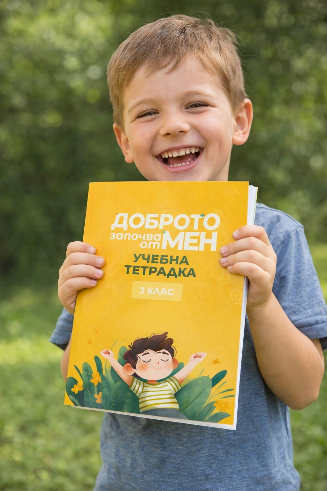
„Доброто започва от мен“ създава възможности децата не просто да научат какво представляват силните страни на характера, а да ги разпознават в себе си и в другите, да ги преживяват и да ги прилагат в ежедневни ситуации.
Програмата е разработена с разбирането, че образованието има задача не само да предава знания, но и да подпомага изграждането на личности, които умеят да общуват, да сътрудничат, да преодоляват трудности и да допринасят позитивно за своята общност.
Научете повече за програмата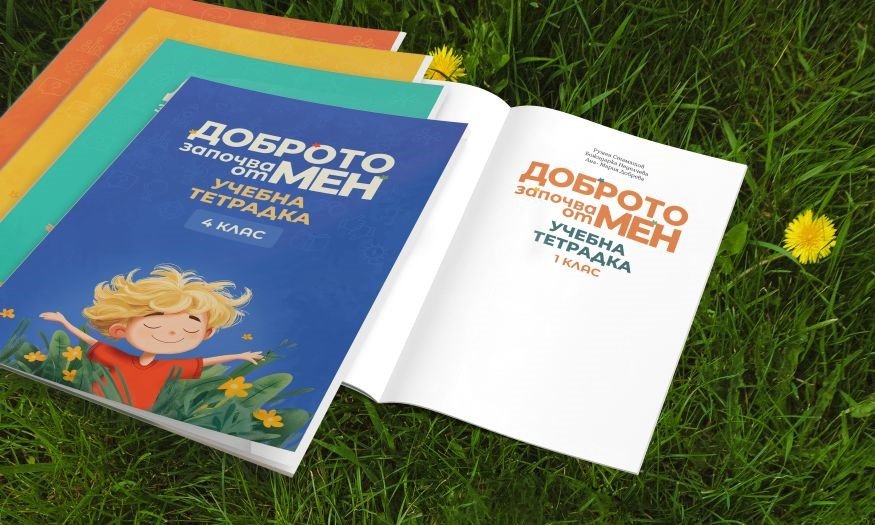
Самостоятелна тетрадка за всеки клас от I до VII, съобразена с възрастовите особености и предназначена за практическа работа върху силните страни.
Методическа подкрепа за педагогическите специалисти, която превръща темата за силните страни в естествена част от училищната среда.
Специализирани обучения за прилагане на програмата в практиката — с включен 1 квалификационен кредит.
Седем работни тетрадки — всяка със собствен облик, съобразена с възрастта и потребностите на учениците.
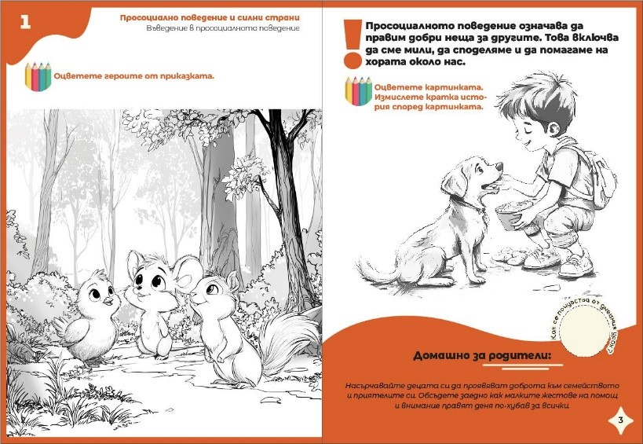
Едно дете може да проявява силна любознателност и креативност. Друго може да се отличава с доброта, чувство за справедливост или способност да работи добре с другите. Трето — с постоянство и смелост при преодоляване на трудности.
Задачата не е всички деца да бъдат еднакви. Задачата е всяко дете да открие своите ресурси и да се научи да ги използва по конструктивен начин.
Доброто започва от мен.
Запознайте се с материалите, заявете обучение за педагогическия екип или направете запитване за закупуване на помагалата.
„Доброто започва от мен“ е образователна програма за деца и ученици от I до VII клас, която подпомага изграждането на личности, умеещи да общуват, да сътрудничат, да преодоляват трудности и да допринасят позитивно за своята общност.
Програмата е разработена за ученици от I до VII клас, като за всеки клас е създадена самостоятелна работна тетрадка, съобразена с възрастовите особености и потребности на децата.
Програмата предлага дейности, ситуации, въпроси и упражнения, чрез които учениците могат да осмислят собственото си поведение и да откриват начините, по които силните страни могат да бъдат използвани в реалния живот.
Към програмата е разработено и ръководство за учителя, което подпомага педагогическите специалисти при нейното прилагане.
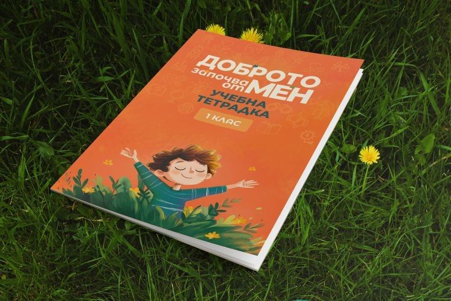
Всяка тетрадка е съобразена с възрастта на учениците и е предназначена за практическа работа върху развитието на силните страни.
Истории, игри, въпроси за размисъл и „Домашно за родители“ — така силните страни оживяват във всеки урок. Натиснете върху страница, за да я разгледате отблизо.
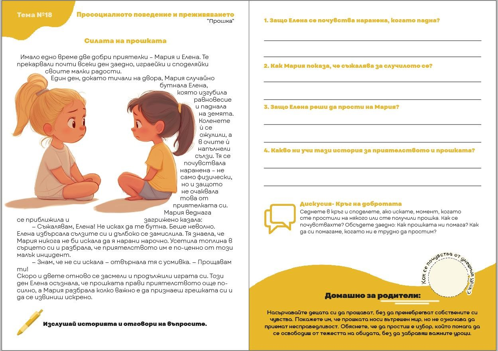
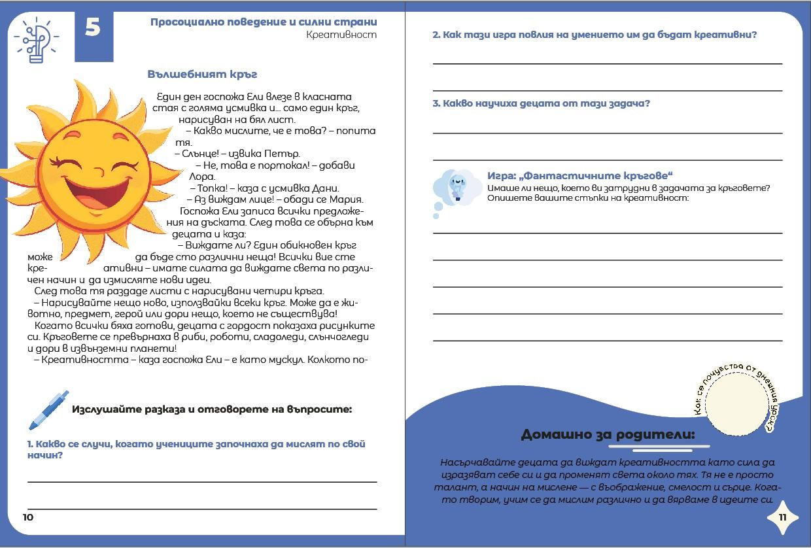
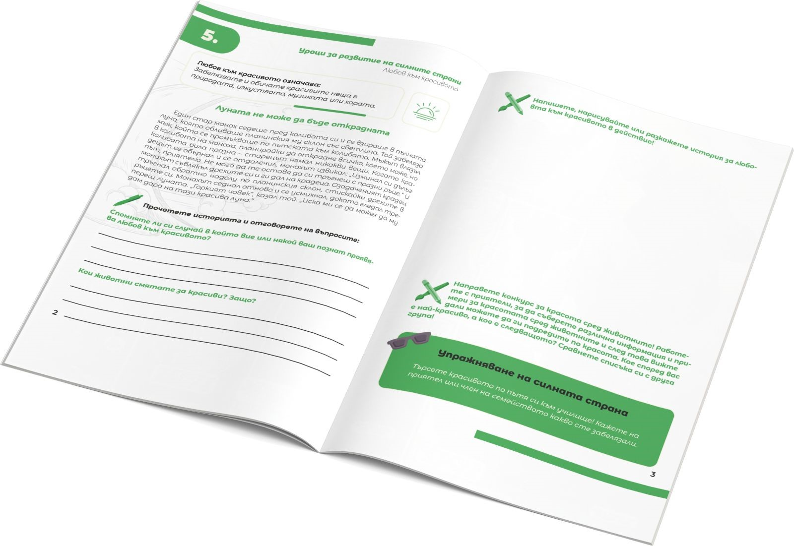
Ръководството предоставя методическа подкрепа на учителите при работа с програмата и подпомага превръщането на темата за силните страни в естествена част от училищната среда.
Специализирани обучения за работа с програмата — за учители и други педагогически специалисти, които желаят да я прилагат в своята практика.
1 квалификационен кредит
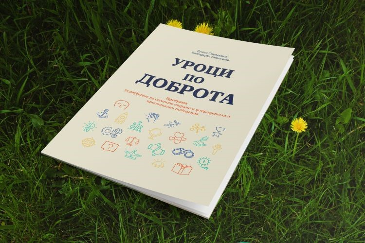
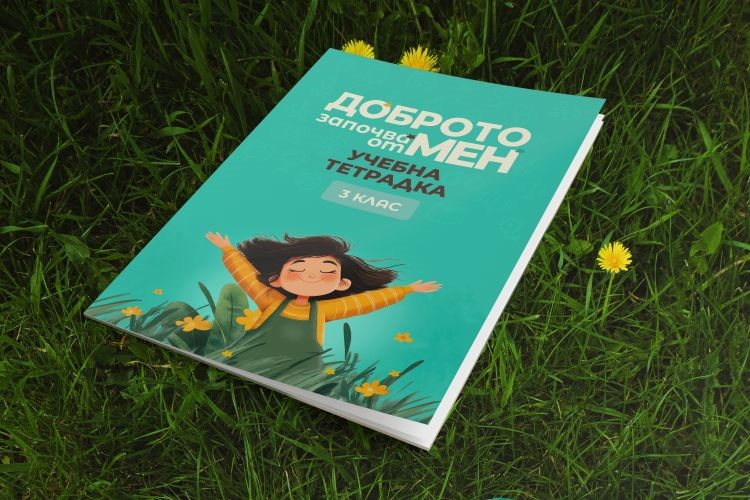
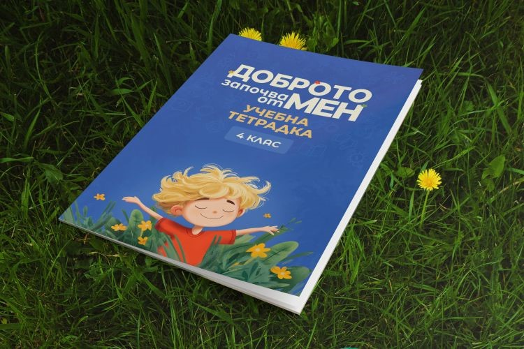
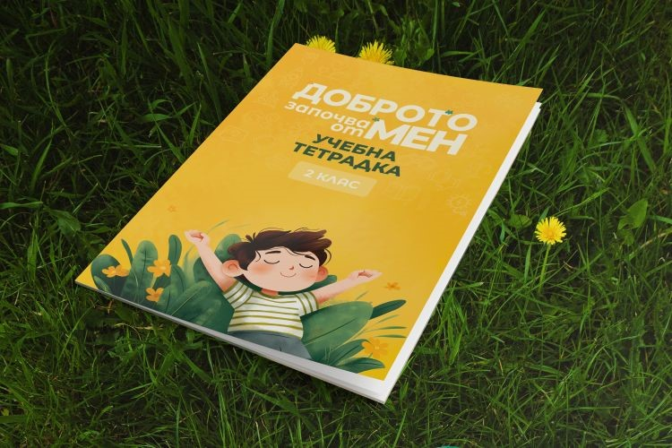
Можете да се запознаете с материалите, да заявите обучение за педагогическия екип или да направите запитване за закупуване на помагалата.
Тази страница е в процес на подготовка. Скоро тук ще можете да научите повече за екипа зад програмата „Доброто започва от мен“.
Обратно към началото